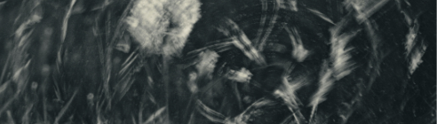
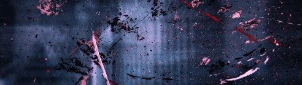

Осознанные сновидения — это сны, где вы понимаете, что спите и можете делать всё, что захотите. Создавать новые миры, летать, путешествовать, осуществлять мечты и работать с психикой, всё это возможно в таких снах.

Осознанность — это способность контролировать своё состояние, мысли и действия. Повышение осознанности — является важнейшей концепцией человеческого развития. Развивая этот навык вы заметите изменения в лучшую сторону своей жизни.
О чем нас предупреждают сновидения и как это использовать. Работает ли толкование снов и расшифровка образов. Можно ли доверять сонникам и советам из сети? Как разгадать свои образы и возможно это делать самостоятельно?
Сталкинг — это стратегия управления своим поведением в социуме. Позволяет улучшить эффективность взаимодействий с людьми в повседневной жизни. Любой поступок «сталкера» исходит из его стратегии, а не мимолётной эмоции.

Мифы и страхи осознанных сновидений. Возможно застрять во сне и остаться там? Сны видит каждый или нет? Умерев во сне, умрешь в реальности? Существуют вообще опасности в сновидениях и может ли каждый научиться ими управлять?

В чём суть новомодной практики и действенна ли она? Это все часть сновидения, или действительно путешествие в другую реальность? Как использовать и будет ли это вообще работать? Отвечаем на вопросы и разбираем тренд.
В чем разница между осознанным сном и люцидным? Есть ли уровни осознанности у люцидных снов. Lucid dreams — просто сон или управляемый? Почему вообще есть разделения уровня сновидений и стоит ли вообще их разделять?
Что можно делать в осознанных сновидениях и как это использовать для своей пользы? Узнайте основные причины для чего используют другие люди свои сновидения и попробуйте применить это на себе.